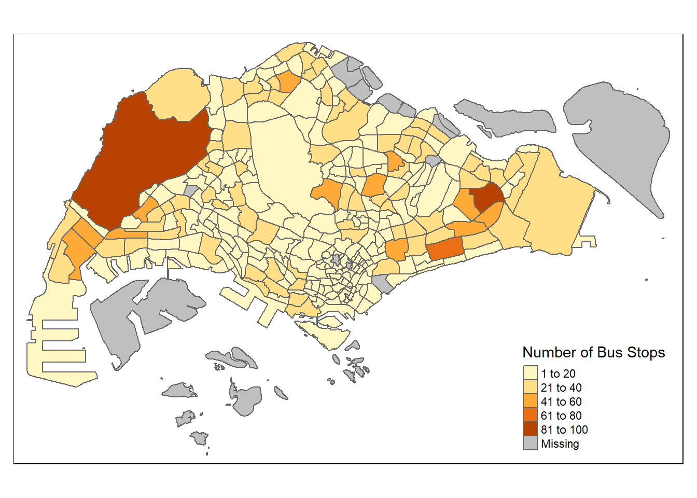
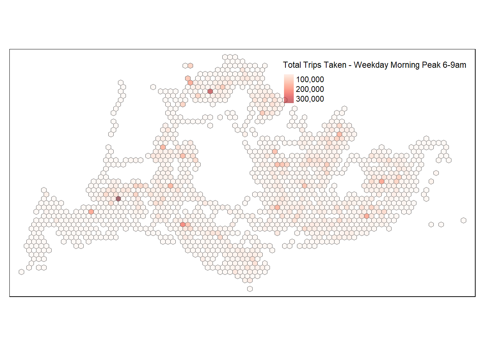
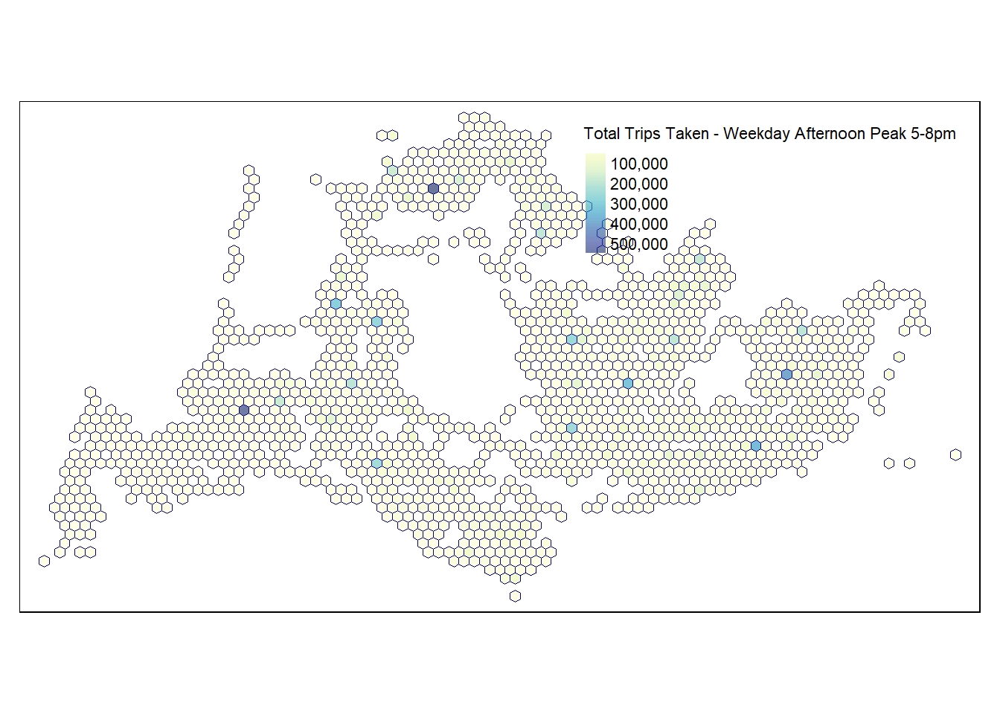
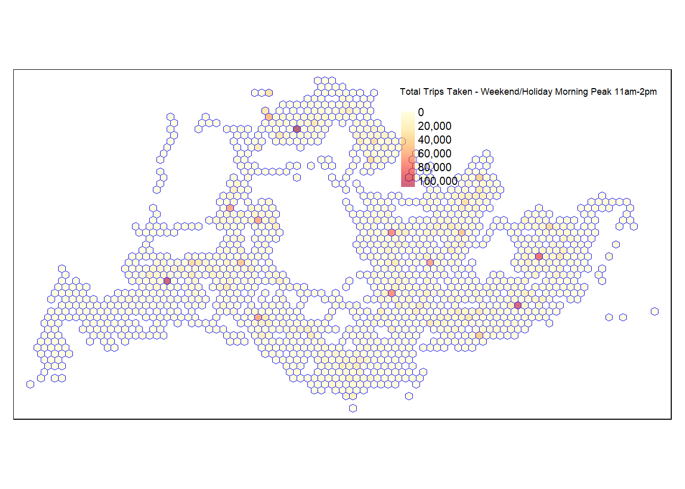
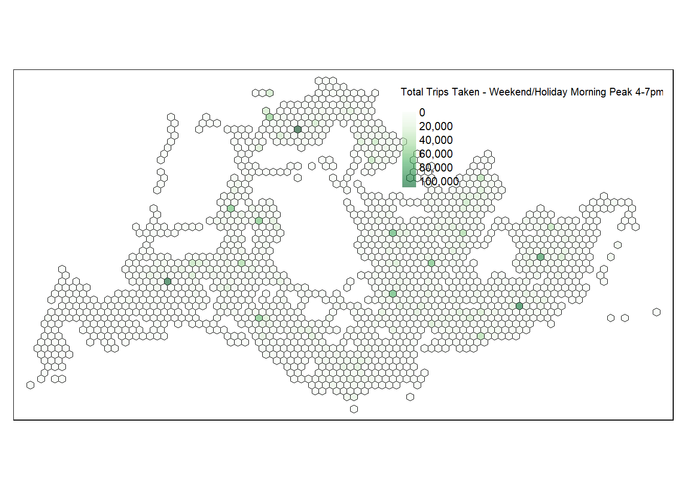
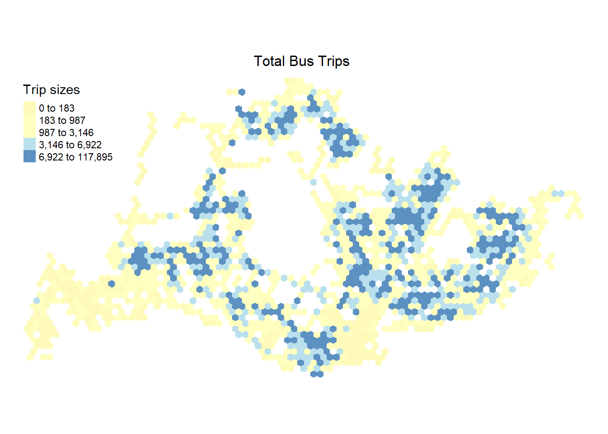
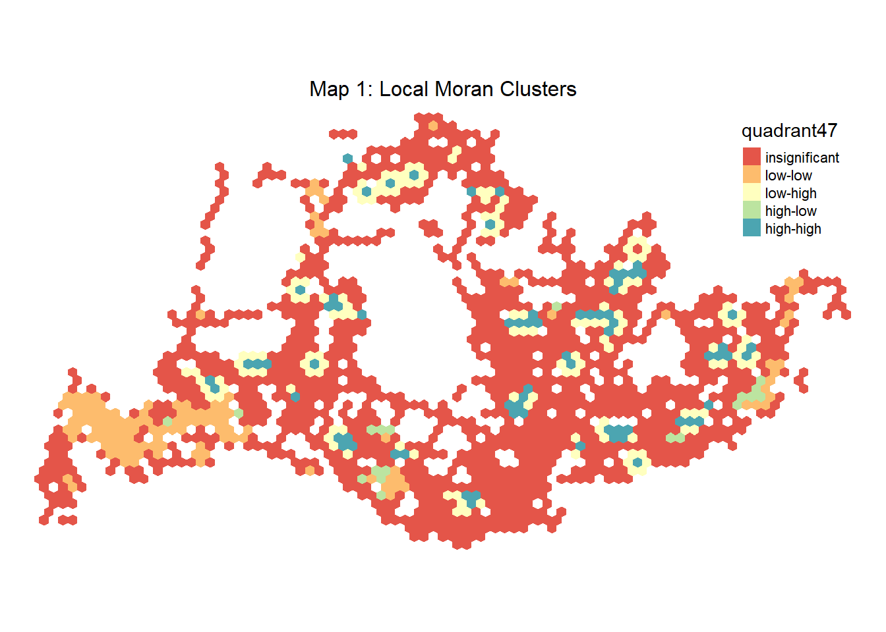
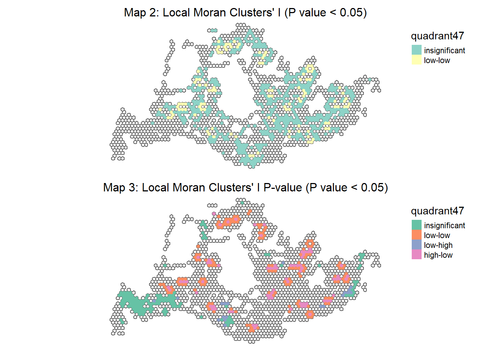

pacman::p_load(sf, sfdep, tmap, tidyverse, knitr, dplyr)Take Home Exercise 1a:Geovisualisation and Analysis
1. Overview
The urban public transport system generates vast amounts of spatiotemporal trajectory data daily, encompassing bus card swipes and GPS location tracking. When this data is complete and accurate, merging bus card transaction data with GPS positioning easily yields valuable information on passengers’ boarding points. This integrated data offers a comprehensive view of transit usage patterns, enhancing our understanding of urban mobility. Analyzing this rich dataset enables the identification of key trends and behaviors in public transportation usage, providing critical insights for city planners and transport authorities to optimize routes, improve service efficiency, and enhance the overall commuter experience.
2. Getting Started
Below libraries will be used:
sf (Simple Features for R): handling spatial data in R. It provides simple, consistent functions for working with spatial vector data (points, lines, polygons).
sfdep: provides an interface to ‘spdep’ to integrate with ‘sf’ objects and the ‘tidyverse’. It will be used for conducting Exploratory Spatial Data Analysis.
tmap: provides a set of functions and tools for creating thematic maps such as choropleths
Importing Geospatial data into R
Firstly, we load in our data:
- Bus Stop Location from LTA DataMall. It provides information about all the bus stops currently being serviced by buses, including the bus stop code (identifier) and location coordinates.
The code chunk below uses st_read() function of sf package to import BusStop shape file into R as a polygon feature data frame. The imported shape file will be a simple features object of sf.
getwd()[1] "C:/kekekay/ISSS624/Take-home-1"busstop <- st_read(dsn = "Data/geospatial",layer = "BusStop")Reading layer `BusStop' from data source
`C:\kekekay\ISSS624\Take-home-1\Data\geospatial' using driver `ESRI Shapefile'
Simple feature collection with 5161 features and 3 fields
Geometry type: POINT
Dimension: XY
Bounding box: xmin: 3970.122 ymin: 26482.1 xmax: 48284.56 ymax: 52983.82
Projected CRS: SVY21glimpse(busstop)Rows: 5,161
Columns: 4
$ BUS_STOP_N <chr> "22069", "32071", "44331", "96081", "11561", "66191", "2338…
$ BUS_ROOF_N <chr> "B06", "B23", "B01", "B05", "B05", "B03", "B02A", "B02", "B…
$ LOC_DESC <chr> "OPP CEVA LOGISTICS", "AFT TRACK 13", "BLK 239", "GRACE IND…
$ geometry <POINT [m]> POINT (13576.31 32883.65), POINT (13228.59 44206.38),…From the result, we can see there are total 5161 multipolygons features with 3 fields in busstop.
Checking for missing values in bus stop data:
sum(is.na(busstop))[1] 9sapply(busstop, function(x) sum(is.na(x)))BUS_STOP_N BUS_ROOF_N LOC_DESC geometry
0 1 8 0 There are total 9 missing value and let’s take a further look to decide whether to drop it:
# Filtering rows with missing values in BUS_ROOF_N
missing_bus_roof_n <- busstop %>%
filter(is.na(BUS_ROOF_N))
# Viewing the rows with missing BUS_ROOF_N
head(missing_bus_roof_n)Simple feature collection with 1 feature and 3 fields
Geometry type: POINT
Dimension: XY
Bounding box: xmin: 42187.23 ymin: 34995.78 xmax: 42187.23 ymax: 34995.78
Projected CRS: SVY21
BUS_STOP_N BUS_ROOF_N LOC_DESC geometry
1 96319 <NA> Yusen Logistics POINT (42187.23 34995.78)# Filtering rows with missing values in LOC_DESC
missing_loc_desc <- busstop %>%
filter(is.na(LOC_DESC))
# Viewing the rows with missing LOC_DESC
head(missing_loc_desc)Simple feature collection with 6 features and 3 fields
Geometry type: POINT
Dimension: XY
Bounding box: xmin: 22616.75 ymin: 28664.55 xmax: 30305.32 ymax: 47793.68
Projected CRS: SVY21
BUS_STOP_N BUS_ROOF_N LOC_DESC geometry
1 47201 UNK <NA> POINT (22616.75 47793.68)
2 06029 B06 <NA> POINT (28602.95 29334.55)
3 03569 B04 <NA> POINT (30277.55 28664.55)
4 03561 B03 <NA> POINT (30305.32 28673.52)
5 06011 B01 <NA> POINT (28634.37 29240.45)
6 05069 B09A <NA> POINT (28770.39 29184.57)Since this analysis is argely geographical (e.g., mapping bus stop locations), missing values in BUS_ROOF_N and LOC_DESC may not significantly impact the results, as the key geometrical data (coordinates of bus stops) is intact.
Importing attribute data into R
odbus <- read.csv("data/aspatial/origin_destination_bus_202310.csv")
glimpse(odbus)Rows: 5,694,297
Columns: 7
$ YEAR_MONTH <chr> "2023-10", "2023-10", "2023-10", "2023-10", "2023-…
$ DAY_TYPE <chr> "WEEKENDS/HOLIDAY", "WEEKDAY", "WEEKENDS/HOLIDAY",…
$ TIME_PER_HOUR <int> 16, 16, 14, 14, 17, 17, 17, 7, 14, 14, 10, 20, 20,…
$ PT_TYPE <chr> "BUS", "BUS", "BUS", "BUS", "BUS", "BUS", "BUS", "…
$ ORIGIN_PT_CODE <int> 4168, 4168, 80119, 80119, 44069, 20281, 20281, 190…
$ DESTINATION_PT_CODE <int> 10051, 10051, 90079, 90079, 17229, 20141, 20141, 1…
$ TOTAL_TRIPS <int> 3, 5, 3, 5, 4, 1, 24, 2, 1, 7, 3, 2, 5, 1, 1, 1, 1…Checking for missing values:
sum(is.na(odbus))[1] 0there is no missing value and proceed to view the rows in odbus:
head(odbus) YEAR_MONTH DAY_TYPE TIME_PER_HOUR PT_TYPE ORIGIN_PT_CODE
1 2023-10 WEEKENDS/HOLIDAY 16 BUS 4168
2 2023-10 WEEKDAY 16 BUS 4168
3 2023-10 WEEKENDS/HOLIDAY 14 BUS 80119
4 2023-10 WEEKDAY 14 BUS 80119
5 2023-10 WEEKDAY 17 BUS 44069
6 2023-10 WEEKENDS/HOLIDAY 17 BUS 20281
DESTINATION_PT_CODE TOTAL_TRIPS
1 10051 3
2 10051 5
3 90079 3
4 90079 5
5 17229 4
6 20141 1the ORIGIN_PT_CODE and DESTINATION_PT_CODE columns represent categorical data rather than numerical values. In R, factors are used to handle categorical variables which are stored as levels.
#Convert the 2 columns to factors
odbus$ORIGIN_PT_CODE <- as.factor(odbus$ORIGIN_PT_CODE)
odbus$DESTINATION_PT_CODE <- as.factor(odbus$DESTINATION_PT_CODE) Filter and aggregate the origin-destination data (odbus) for specific time periods
A summarized view of trip data for specific time periods, which can be very useful for understanding travel patterns during peak hours.
| Peak hour period | Bus tap on time | Data name |
|---|---|---|
| Weekday morning peak | 6am to 9am | origin6_9wdm |
| Weekday afternoon peak | 5pm to 8pm | origin5_8wda |
| Weekend/holiday morning peak | 11am to 2pm | origin11_2hm |
| Weekend/holiday evening peak | 4pm to 7pm | origin4_7he |
origin6_9wdm <- odbus %>%
filter(DAY_TYPE == "WEEKDAY") %>%
filter(TIME_PER_HOUR >= 6 &
TIME_PER_HOUR <= 9) %>%
group_by(ORIGIN_PT_CODE) %>%
summarise(TRIPS = sum(TOTAL_TRIPS))origin5_8wda <- odbus %>%
filter(DAY_TYPE == "WEEKDAY") %>%
filter(TIME_PER_HOUR >= 17 &
TIME_PER_HOUR <= 20) %>%
group_by(ORIGIN_PT_CODE) %>%
summarise(TRIPS = sum(TOTAL_TRIPS))origin11_2hm <- odbus %>%
filter(DAY_TYPE == "WEEKENDS/HOLIDAY") %>%
filter(TIME_PER_HOUR >= 11 &
TIME_PER_HOUR <= 14) %>%
group_by(ORIGIN_PT_CODE) %>%
summarise(TRIPS = sum(TOTAL_TRIPS))origin4_7he <- odbus %>%
filter(DAY_TYPE == "WEEKENDS/HOLIDAY") %>%
filter(TIME_PER_HOUR >= 16 &
TIME_PER_HOUR <= 19) %>%
group_by(ORIGIN_PT_CODE) %>%
summarise(TRIPS = sum(TOTAL_TRIPS))Presenting Data with kable: using the kable function to create neatly formatted tables of the first few rows of the datasets.
Saving Data with write_rds: saving the filtered and summarized datasets to RDS files.
Reloading Data with read_rds: After saving the datasets, reloading them to ensure that the saved files contain the correct data. This verifies the integrity of the saved files and ensures that they can be reused in following analysis without re-run the entire preprocessing pipeline.
kable(head(origin6_9wdm))| ORIGIN_PT_CODE | TRIPS |
|---|---|
| 1012 | 1770 |
| 1013 | 841 |
| 1019 | 1530 |
| 1029 | 2483 |
| 1039 | 2919 |
| 1059 | 1734 |
kable(head(origin5_8wda))| ORIGIN_PT_CODE | TRIPS |
|---|---|
| 1012 | 8000 |
| 1013 | 7038 |
| 1019 | 3398 |
| 1029 | 9089 |
| 1039 | 12095 |
| 1059 | 2212 |
kable(head(origin11_2hm))| ORIGIN_PT_CODE | TRIPS |
|---|---|
| 1012 | 2177 |
| 1013 | 1818 |
| 1019 | 1536 |
| 1029 | 3217 |
| 1039 | 5408 |
| 1059 | 1159 |
kable(head(origin4_7he))| ORIGIN_PT_CODE | TRIPS |
|---|---|
| 1012 | 3061 |
| 1013 | 2770 |
| 1019 | 1685 |
| 1029 | 4063 |
| 1039 | 7263 |
| 1059 | 1118 |
write_rds(origin6_9wdm, "data/rds/origin6_9wdm.rds")
write_rds(origin5_8wda, "data/rds/origin5_8wda.rds")
write_rds(origin11_2hm, "data/rds/origin11_2hm.rds")
write_rds(origin4_7he, "data/rds/origin4_7he.rds")
origin6_9wdm <- read_rds("data/rds/origin6_9wdm.rds")
origin5_8wda <- read_rds("data/rds/origin5_8wda.rds")
origin11_2hm <- read_rds("data/rds/origin11_2hm.rds")
origin4_7he <- read_rds("data/rds/origin4_7he.rds")Transforming Coordinate System
Read and spatially transform both bus stop and Master Plan Subzone (MPSZ) datasets to a Singapore-specific coordinate system (CRS 3414)
busstop <- st_read(dsn = "data/geospatial",
layer = "BusStop") %>%
st_transform(crs = 3414)Reading layer `BusStop' from data source
`C:\kekekay\ISSS624\Take-home-1\Data\geospatial' using driver `ESRI Shapefile'
Simple feature collection with 5161 features and 3 fields
Geometry type: POINT
Dimension: XY
Bounding box: xmin: 3970.122 ymin: 26482.1 xmax: 48284.56 ymax: 52983.82
Projected CRS: SVY21glimpse(busstop)Rows: 5,161
Columns: 4
$ BUS_STOP_N <chr> "22069", "32071", "44331", "96081", "11561", "66191", "2338…
$ BUS_ROOF_N <chr> "B06", "B23", "B01", "B05", "B05", "B03", "B02A", "B02", "B…
$ LOC_DESC <chr> "OPP CEVA LOGISTICS", "AFT TRACK 13", "BLK 239", "GRACE IND…
$ geometry <POINT [m]> POINT (13576.31 32883.65), POINT (13228.59 44206.38),…mpsz <- st_read(dsn = "data/geospatial",
layer = "MPSZ-2019") %>%
st_transform(crs = 3414)Reading layer `MPSZ-2019' from data source
`C:\kekekay\ISSS624\Take-home-1\Data\geospatial' using driver `ESRI Shapefile'
Simple feature collection with 332 features and 6 fields
Geometry type: MULTIPOLYGON
Dimension: XY
Bounding box: xmin: 103.6057 ymin: 1.158699 xmax: 104.0885 ymax: 1.470775
Geodetic CRS: WGS 84glimpse(mpsz)Rows: 332
Columns: 7
$ SUBZONE_N <chr> "MARINA EAST", "INSTITUTION HILL", "ROBERTSON QUAY", "JURON…
$ SUBZONE_C <chr> "MESZ01", "RVSZ05", "SRSZ01", "WISZ01", "MUSZ02", "MPSZ05",…
$ PLN_AREA_N <chr> "MARINA EAST", "RIVER VALLEY", "SINGAPORE RIVER", "WESTERN …
$ PLN_AREA_C <chr> "ME", "RV", "SR", "WI", "MU", "MP", "WI", "WI", "SI", "SI",…
$ REGION_N <chr> "CENTRAL REGION", "CENTRAL REGION", "CENTRAL REGION", "WEST…
$ REGION_C <chr> "CR", "CR", "CR", "WR", "CR", "CR", "WR", "WR", "CR", "CR",…
$ geometry <MULTIPOLYGON [m]> MULTIPOLYGON (((33222.98 29..., MULTIPOLYGON (…Perform a spatial intersection to map each bus stop to its corresponding subzone. This process culminates in creating and saving a simplified dataset that links bus stops with subzones, dropping unnecessary geometric data.
busstop_mpsz <- st_intersection(busstop, mpsz) %>%
select(BUS_STOP_N, SUBZONE_C) %>%
st_drop_geometry()
write_rds(busstop_mpsz, "data/rds/busstop_mpsz.csv")
glimpse(busstop_mpsz)Rows: 5,156
Columns: 2
$ BUS_STOP_N <chr> "13099", "13089", "06151", "13211", "13139", "13109", "1311…
$ SUBZONE_C <chr> "RVSZ05", "RVSZ05", "SRSZ01", "SRSZ01", "SRSZ01", "SRSZ01",…Exploratory Data Analysis (EDA) on busstop_mpsz dataset:
Count of Bus Stops per Subzone to reveal which areas are more heavily serviced by buses.
busstop_counts <- busstop_mpsz %>%
group_by(SUBZONE_C) %>%
summarise(Count = n())
head(busstop_counts)# A tibble: 6 × 2
SUBZONE_C Count
<chr> <int>
1 AMSZ01 8
2 AMSZ02 21
3 AMSZ03 15
4 AMSZ04 9
5 AMSZ05 12
6 AMSZ06 16Map Visualization:
Since we have geographic data for subzones, we can create a map showing the distribution of bus stops. This can be particularly insightful for understanding spatial patterns.
busstop_counts_map <- mpsz %>%
left_join(busstop_counts, by = "SUBZONE_C")
tm_shape(busstop_counts_map) +
tm_borders() +
tm_fill(col = "Count", title = "Number of Bus Stops")
Geospatial Visualization (Geovisualisation)
Hexagon Level Aggregation:
create a hexagonal grid over mpsz -spatial dataset of Master Plan Subzones, use the st_make_grid() function from the sf package to generate a grid of hexagons with specified dimensions, and then create an sf object from that grid.
area_hexagon_grid = st_make_grid(mpsz, c(500, 500), what = "polygons", square = FALSE)add ID to each hexagon:
hexagon_grid_sf = st_sf(area_hexagon_grid) %>%
mutate(grid_id = 1:length(lengths(area_hexagon_grid)))intersect the hexagonal grid with the bus stops, select certain columns, and then drop the geometry for saving to an RDS file:
busstop_hexagon <- st_intersection(hexagon_grid_sf,busstop) %>%
select(BUS_STOP_N, grid_id) %>%
st_drop_geometry()
write_rds(busstop_hexagon, "data/rds/busstop_hexagon.csv")check for duplicates and only retain the unique values:
duplicate <- busstop_hexagon %>%
group_by_all() %>%
filter(n()>1) %>%
ungroup()
busstop_hexagon <- unique(busstop_hexagon)exclude NA value for each bus stops
busstop_hexagon <- busstop_hexagon %>%
filter(!is.na(grid_id) & grid_id > 0)Assign ID to each bus stop, exclude all the NULL and 0 values
# Convert the ORIGIN_PT_CODE to a character type before the join
origin11_2hm$ORIGIN_PT_CODE <- as.character(origin11_2hm$ORIGIN_PT_CODE)
origin4_7he$ORIGIN_PT_CODE <- as.character(origin4_7he$ORIGIN_PT_CODE)
origin5_8wda$ORIGIN_PT_CODE <- as.character(origin5_8wda$ORIGIN_PT_CODE)
origin6_9wdm$ORIGIN_PT_CODE <- as.character(origin6_9wdm$ORIGIN_PT_CODE)gridid11_2 <- left_join(busstop_hexagon, origin11_2hm,
by = c("BUS_STOP_N" = "ORIGIN_PT_CODE"))
gridi11_2 <- gridid11_2 %>%
filter(!is.na(TRIPS) & TRIPS > 0)
gridid5_8 <- left_join(busstop_hexagon, origin5_8wda,
by = c("BUS_STOP_N" = "ORIGIN_PT_CODE"))
gridid5_8 <- gridid5_8 %>%
filter(!is.na(TRIPS) & TRIPS > 0)
gridid6_9 <- left_join(busstop_hexagon, origin6_9wdm,
by = c("BUS_STOP_N" = "ORIGIN_PT_CODE"))
gridid6_9 <- gridid6_9 %>%
filter(!is.na(TRIPS) & TRIPS > 0)
gridid4_7 <- left_join(busstop_hexagon, origin4_7he,
by = c("BUS_STOP_N" = "ORIGIN_PT_CODE"))
gridid4_7 <- gridid4_7 %>%
filter(!is.na(TRIPS) & TRIPS > 0)Choropleth Visualisation
6-9am weekday peak hours
aggregate trip data by hexagonal grid IDs to calculate total trips during weekday morning 6-9:
total_trips_by_grid <- gridid6_9 %>%
group_by(grid_id) %>%
summarise(total_trips = sum(TRIPS, na.rm = TRUE))merge above with a spatial grid to create a sf object:
total_trips_by_grid <- total_trips_by_grid %>%
left_join(hexagon_grid_sf, by = c("grid_id" = "grid_id"))
total_trips_by_grid_sf <- st_sf(total_trips_by_grid)Using tmap to construct a choropleth map:
tmap_mode("plot")
map_hex = tm_shape(total_trips_by_grid_sf) +
tm_fill(
col = "total_trips",
palette = "Reds",
style = "cont",
title = "Total Trips Taken - Weekday Morning Peak 6-9am",
id = "grid_id",
showNA = FALSE,
alpha = 0.6,
popup.vars = c(
"Number of trips: " = "total_trips"
),
popup.format = list(
total_trips = list(format = "f", digits = 0)
)
) +
tm_borders(col = "grey40", lwd = 0.4)
map_hex
The choropleth map for the 6-9am weekday peak hours elucidates the distribution of bus ridership across the city’s hexagonal sectors. Deep reds indicate bustling hubs, likely business districts or transit interchanges, revealing heavy commuter influx. Lighter shades suggest residential areas with sparser ridership. This visualization is instrumental for urban planners and transit authorities, highlighting critical areas for potential service enhancement and infrastructure development.
5pm-8pm Weekday Afternoon Peak Hours
Same methods to plot for Weekday Afternoon Peak Hours 5pm-8pm
total_trips_by_grid <- gridid5_8 %>%
group_by(grid_id) %>%
summarise(total_trips = sum(TRIPS, na.rm = TRUE))
total_trips_by_grid <- total_trips_by_grid %>%
left_join(hexagon_grid_sf, by = c("grid_id" = "grid_id"))
total_trips_by_grid_sf <- st_sf(total_trips_by_grid)
tmap_mode("plot")
map_hex = tm_shape(total_trips_by_grid_sf) +
tm_fill(
col = "total_trips",
palette = "YlGnBu",
style = "cont",
title = "Total Trips Taken - Weekday Afternoon Peak 5-8pm",
id = "grid_id",
showNA = FALSE,
alpha = 0.6,
popup.vars = c(
"Number of trips: " = "total_trips"
),
popup.format = list(
total_trips = list(format = "f", digits = 0)
)
) +
tm_borders(col = "blue4", lwd = 0.4)
map_hex
The 5-8 pm weekday choropleth map captures the unique dynamics of evening commuting patterns. It vividly displays areas of heightened activity, likely representing major commercial centers and business districts where people depart from at the end of the workday. The varied shades across the hexagonal grid indicate a diverse distribution of bus ridership, with some zones experiencing higher traffic, possibly reflecting major transit routes or nodes. This map helps understand the evening dispersal patterns in urban transit, providing key insights for optimizing bus services during these peak hours. Also in identifying areas that might benefit from increased service frequency or capacity enhancements to accommodate the high volume of commuters heading home.
11am-2pm Weekend/Holiday Morning Peak Hours
total_trips_by_grid <- gridid11_2 %>%
group_by(grid_id) %>%
summarise(total_trips = sum(TRIPS, na.rm = TRUE))
total_trips_by_grid <- total_trips_by_grid %>%
left_join(hexagon_grid_sf, by = c("grid_id" = "grid_id"))
total_trips_by_grid_sf <- st_sf(total_trips_by_grid)
tmap_mode("plot")
map_hex = tm_shape(total_trips_by_grid_sf) +
tm_fill(
col = "total_trips",
palette = "YlOrRd",
style = "cont",
title = "Total Trips Taken - Weekend/Holiday Morning Peak 11am-2pm",
id = "grid_id",
showNA = FALSE,
alpha = 0.6,
popup.vars = c(
"Number of trips: " = "total_trips"
),
popup.format = list(
total_trips = list(format = "f", digits = 0)
)
) +
tm_borders(col = "blue", lwd = 0.4)
map_hex
For the Weekend/Holiday Morning Peak between 11am and 2pm, the map likely illustrates a distinct pattern compared to typical weekday commuting hours. This period often encompasses leisure or shopping activities, and the map could reveal areas of high pedestrian traffic such as malls, parks, or tourist attractions. Denser areas on the map might indicate popular weekend destinations or residential areas from which people commonly venture out during these hours. Such a visualization is particularly valuable for understanding weekend mobility trends, guiding public transport adjustments to cater to non-work-related travel, and enhancing overall service quality during leisure peak times.
4pm-7pm Weekend/Holiday Evening Peak Hours
total_trips_by_grid <- gridid11_2 %>%
group_by(grid_id) %>%
summarise(total_trips = sum(TRIPS, na.rm = TRUE))
total_trips_by_grid <- total_trips_by_grid %>%
left_join(hexagon_grid_sf, by = c("grid_id" = "grid_id"))
total_trips_by_grid_sf <- st_sf(total_trips_by_grid)
tmap_mode("plot")
map_hex = tm_shape(total_trips_by_grid_sf) +
tm_fill(
col = "total_trips",
palette = "Greens",
style = "cont",
title = "Total Trips Taken - Weekend/Holiday Morning Peak 4-7pm",
id = "grid_id",
showNA = FALSE,
alpha = 0.6,
popup.vars = c(
"Number of trips: " = "total_trips"
),
popup.format = list(
total_trips = list(format = "f", digits = 0)
)
) +
tm_borders(col = "black", lwd = 0.4)
map_hex
For the Weekend/Holiday Evening Peak Hours from 4pm to 7pm, the map would likely show the movement patterns as people conclude their leisure activities or return from day trips. Areas with higher activity could include shopping districts, entertainment venues, or parks, reflecting where people spend their weekend afternoons. The map might also highlight transit routes leading back to residential areas, indicating the flow of people heading home. This visualization is invaluable for transit planners to understand and respond to weekend evening travel habits, ensuring efficient and adequate transportation services during these times, and enhancing the overall weekend travel experience.
3. Local Indicators of Spatial Association (LISA) Analysis
LISA analysis helps in identifying clusters of high or low values (e.g. areas with high or low bus ridership) and can be particularly informative for spatial planning and analysis.
Create a Neighbors List
getwd()[1] "C:/kekekay/ISSS624/Take-home-1"neighbours <- total_trips_by_grid_sf %>%
mutate(nb = st_contiguity(area_hexagon_grid))
neighbours <- neighbours %>%
filter(!sapply(nb, function(x) any(x == 0)))
# Now, you can proceed with creating the weights
neighbours <- neighbours %>%
mutate(
wt = st_weights(nb, style = "W"),
.before = 1
)# Check for empty neighbor first
no_neighbours <- which(map_int(neighbours, length) == 0)
if (length(no_neighbours) > 0) {
cat("Empty neighbours:", no_neighbours, "\n")
} else {
cat("No empty neighbour found.\n")
}No empty neighbour found.Neighbours list Map
tmap_mode("plot")
map_v <- tm_shape(neighbours) +
tm_fill(
col = "total_trips",
palette = "RdYlBu",
style = "quantile",
title = "Trip sizes"
) +
tm_layout(main.title = "Total Bus Trips ",
main.title.size = 1,
main.title.position = "center",
legend.position = c("left", "top"),
legend.height = .6,
legend.width = .2,
frame = FALSE
)
map_v
Perform Moran’s I
Weekday Morning Peak 6am-9am
set.seed(1234)
# Step 1: Merge the data of list and grid id
merged_data6_9 <- neighbours %>%
left_join(gridid6_9, by = "grid_id")
# Step 2: Prepare the data
# make sure it's sf object
if (!("sf" %in% class(merged_data6_9))) {
merged_data6_9 <- st_as_sf(merged_data6_9, geom_col = "area_hexagon_grid")
}# Step 3: Recreate the neighbor list and spatial weights
pacman::p_load(spData,spdep)
listw <- nb2listw(merged_data6_9$nb, style = "W")
nrow(merged_data6_9)[1] 4823length(listw$neighbours)[1] 4823Computing local Moran’s I
# Recreate neighbors list
nei2 <- poly2nb(merged_data6_9)
# Convert neighbors to spatial weights list
listw2 <- nb2listw(nei2, style = "W", zero.policy = TRUE)
fip69 <- order(merged_data6_9$BUS_STOP_N)
localMI69 <- localmoran(merged_data6_9$total_trips, listw2)
head(localMI69) Ii E.Ii Var.Ii Z.Ii Pr(z != E(Ii))
1 0.3697784 -8.073538e-05 0.09727826 1.1858464 0.2356830
2 0.3762041 -7.688408e-05 0.18535324 0.8740014 0.3821175
3 0.3762041 -7.688408e-05 0.18535324 0.8740014 0.3821175
4 0.3631371 -7.986605e-05 0.06412729 1.4343154 0.1514823
5 0.3613219 -8.015531e-05 0.07724747 1.3003148 0.1934931
6 0.3845079 -8.148774e-05 0.13094011 1.0628229 0.2878623Mapping the local Moran’s I: Before mapping the local Moran’s I map, it is wise to append the local Moran’s I dataframe (i.e. localMI) onto SpatialPolygonDataFrame.
merged_data6_9.localMI69 <- cbind(merged_data6_9,localMI69) %>% rename(Pr.Ii = Pr.z....E.Ii..)Mapping local Moran’s I values
map_moran69_i <- tm_shape(merged_data6_9.localMI69) +
tm_fill(
col = "Ii",
palette = "OrRd",
style = "pretty",
title = "Local Moran's I"
) +
tm_layout(main.title = "Weekday Morning 6-9 - local moran statistics",
main.title.size = 1,
main.title.position = "center",
legend.position = c("left", "top"),
legend.height = .6,
legend.width = .2,
frame = FALSE
)Mapping local Moran’s I p-values
map_moran69_p <- tm_shape(merged_data6_9.localMI69) +
tm_fill(
col = "Pr.Ii",
palette = "BuGn",
style = "pretty",
title = "Weekday Morning 6-9 - local Moran's I p"
) +
tm_layout(
main.title.size = 1,
main.title.position = "center",
legend.position = c("left", "top"),
legend.height = .6,
legend.width = .2,
frame = FALSE
)Weekday Afternoon Peak Hours
set.seed(1234)
# Step 1: Merge the data of list and grid id
merged_data5_8 <- neighbours %>%
left_join(gridid5_8, by = "grid_id")
# Step 2: Prepare the data
# make sure it's sf object
if (!("sf" %in% class(merged_data5_8))) {
merged_data5_8 <- st_as_sf(merged_data5_8, geom_col = "area_hexagon_grid")
}
# Step 3: Recreate the neighbor list and spatial weights
listw58 <- nb2listw(merged_data5_8$nb, style = "W")
nrow(merged_data5_8)[1] 4829length(listw58$neighbours)[1] 4829# Recreate neighbors list
nei58 <- poly2nb(merged_data5_8)
# Convert neighbors to spatial weights list
listw58 <- nb2listw(nei58, style = "W", zero.policy = TRUE)
fip58 <- order(merged_data5_8$BUS_STOP_N)
localMI58 <- localmoran(merged_data5_8$total_trips, listw58)
head(localMI58) Ii E.Ii Var.Ii Z.Ii Pr(z != E(Ii))
1 0.3683470 -8.033283e-05 0.09691375 1.1834751 0.2366209
2 0.3747638 -7.649189e-05 0.18463727 0.8723416 0.3830221
3 0.3747638 -7.649189e-05 0.18463727 0.8723416 0.3830221
4 0.3617154 -7.946582e-05 0.06388541 1.4314019 0.1523151
5 0.3599028 -7.975430e-05 0.07695674 1.2976516 0.1944071
6 0.3830555 -8.108320e-05 0.13045226 1.0607861 0.2887871merged_data5_8.localMI58 <- cbind(merged_data5_8,localMI58) %>% rename(Pr.Ii = Pr.z....E.Ii..)
map_moran58_i <- tm_shape(merged_data5_8.localMI58) +
tm_fill(
col = "Ii",
palette = "OrRd",
style = "pretty",
title = "Local Moran's I"
) +
tm_layout(main.title = "Weekday Afternoon 5-8 - local moran statistics",
main.title.size = 1,
main.title.position = "center",
legend.position = c("left", "top"),
legend.height = .6,
legend.width = .2,
frame = FALSE
)
map_moran58_p <- tm_shape(merged_data5_8.localMI58) +
tm_fill(
col = "Pr.Ii",
palette = "BuGn",
style = "pretty",
title = "Weekday Afternoon 5-8 - local Moran's I p"
) +
tm_layout(
main.title.size = 1,
main.title.position = "center",
legend.position = c("left", "top"),
legend.height = .6,
legend.width = .2,
frame = FALSE
)Weekend/Holiday Morning Peak Hours
set.seed(1234)
# Step 1: Merge the data of list and grid id
merged_data112 <- neighbours %>%
left_join(gridid11_2, by = "grid_id")
# Step 2: Prepare the data
# make sure it's sf object
if (!("sf" %in% class(merged_data112))) {
merged_data112 <- st_as_sf(merged_data112, geom_col = "area_hexagon_grid")
}
# Step 3: Recreate the neighbor list and spatial weights
listw112 <- nb2listw(merged_data112$nb, style = "W")
nrow(merged_data112)[1] 5136length(listw112$neighbours)[1] 5136# Recreate neighbors list
nei112 <- poly2nb(merged_data112)
# Convert neighbors to spatial weights list
listw112 <- nb2listw(nei112, style = "W", zero.policy = TRUE)
fip112 <- order(merged_data112$BUS_STOP_N)
localMI112 <- localmoran(merged_data112$total_trips, listw112)
head(localMI112) Ii E.Ii Var.Ii Z.Ii Pr(z != E(Ii))
1 0.3410957 -7.005613e-05 0.08989321 1.137894 0.2551646
2 0.3472330 -6.660490e-05 0.17099668 0.839867 0.4009830
3 0.3472330 -6.660490e-05 0.17099668 0.839867 0.4009830
4 0.3347596 -6.927686e-05 0.05923914 1.375683 0.1689197
5 0.3330256 -6.953613e-05 0.07136690 1.246866 0.2124466
6 0.3551566 -7.073066e-05 0.12103516 1.021058 0.3072268merged_data112.localMI112 <- cbind(merged_data112,localMI112) %>% rename(Pr.Ii = Pr.z....E.Ii..)
map_moran112_i <- tm_shape(merged_data112.localMI112) +
tm_fill(
col = "Ii",
palette = "YlGn",
style = "pretty",
title = "Local Moran's I"
) +
tm_layout(main.title = "Holiday 11am-2pm - local moran statistics",
main.title.size = 1,
main.title.position = "center",
legend.position = c("left", "top"),
legend.height = .6,
legend.width = .2,
frame = FALSE
)
map_moran112_p <- tm_shape(merged_data112.localMI112) +
tm_fill(
col = "Pr.Ii",
palette = "Set3",
style = "pretty",
title = "Holiday 11am-2pm - local Moran's I p"
) +
tm_layout(
main.title.size = 1,
main.title.position = "center",
legend.position = c("left", "top"),
legend.height = .6,
legend.width = .2,
frame = FALSE
)Weekend/Holiday Evening Peak Hours
set.seed(1234)
# Step 1: Merge the data of list and grid id
merged_data47 <- neighbours %>%
left_join(gridid4_7, by = "grid_id")
# Step 2: Prepare the data
# make sure it's sf object
if (!("sf" %in% class(merged_data47))) {
merged_data47 <- st_as_sf(merged_data47, geom_col = "area_hexagon_grid")
}
# Step 3: Recreate the neighbor list and spatial weights
listw47 <- nb2listw(merged_data47$nb, style = "W")
nrow(merged_data47)[1] 4794length(listw47$neighbours)[1] 4794# Recreate neighbors list
nei47 <- poly2nb(merged_data47)
# Convert neighbors to spatial weights list
listw47 <- nb2listw(nei47, style = "W", zero.policy = TRUE)
fip47 <- order(merged_data47$BUS_STOP_N)
localMI47 <- localmoran(merged_data47$total_trips, listw47)
head(localMI47) Ii E.Ii Var.Ii Z.Ii Pr(z != E(Ii))
1 0.3729332 -8.190340e-05 0.09809173 1.1909956 0.2336553
2 0.3793922 -7.800837e-05 0.18693246 0.8776782 0.3801184
3 0.3793922 -7.800837e-05 0.18693246 0.8776782 0.3801184
4 0.3662567 -8.102422e-05 0.06466557 1.4406057 0.1496961
5 0.3644322 -8.131675e-05 0.07789509 1.3060463 0.1915368
6 0.3877398 -8.266427e-05 0.13203145 1.0673191 0.2858278merged_data47.localMI47 <- cbind(merged_data47,localMI47) %>% rename(Pr.Ii = Pr.z....E.Ii..)
map_moran47_i <- tm_shape(merged_data47.localMI47) +
tm_fill(
col = "Ii",
palette = "YlGn",
style = "pretty",
title = "Local Moran's I"
) +
tm_layout(main.title = "Holiday 4-7pm - local moran statistics",
main.title.size = 1,
main.title.position = "center",
legend.position = c("left", "top"),
legend.height = .6,
legend.width = .2,
frame = FALSE
)
map_moran47_p <- tm_shape(merged_data47.localMI47) +
tm_fill(
col = "Pr.Ii",
palette = "Set3",
style = "pretty",
title = "Holiday 4-7pm - local Moran's I p"
) +
tm_layout(
main.title.size = 1,
main.title.position = "center",
legend.position = c("left", "top"),
legend.height = .6,
legend.width = .2,
frame = FALSE
)tmap_arrange(map_moran69_i, map_moran69_p,
map_moran58_i, map_moran58_p,
map_moran112_i, map_moran112_p,
map_moran47_i, map_moran47_p,
ncol = 2)
Weekday Morning 6-9 am: This map typically shows lower Local Moran’s I values, suggesting less spatial clustering during these hours. This could be due to a more dispersed pattern of commuters traveling from various residential areas to different employment centers.
Weekday Afternoon 5-8 pm: Similarly, this map indicates lower values, which might reflect a return pattern from work where people are heading to a broader range of destinations, including home, after-work activities, or other errands.
Holiday 11 am-2 pm: The increased variation in Local Moran’s I values during these hours suggests that there are more pronounced clusters of trip activity. This is likely reflective of people gathering at specific locations for leisure activities, such as shopping areas, restaurants, or parks.
Holiday 4-7 pm: This period shows significant clustering with high Local Moran’s I values, indicating potential hotspots of activity where people may be congregating, possibly in entertainment or dining districts, or beginning to return home from their day’s activities.
Preparing LISA map classes
quadrant69 <- vector(mode="numeric",length=nrow(localMI69))
merged_data6_9$total_trips <- lag.listw(listw2, merged_data6_9$total_trips)
DV69 <- merged_data6_9$total_trips - mean(merged_data6_9$total_trips) quadrant58 <- vector(mode="numeric",length=nrow(localMI58))
merged_data5_8$total_trips <- lag.listw(listw58, merged_data5_8$total_trips)
DV58 <- merged_data5_8$total_trips - mean(merged_data5_8$total_trips)
quadrant112 <- vector(mode="numeric",length=nrow(localMI112))
merged_data112$total_trips <- lag.listw(listw112, merged_data112$total_trips)
DV112 <- merged_data112$total_trips - mean(merged_data112$total_trips)
quadrant47 <- vector(mode="numeric",length=nrow(localMI47))
merged_data47$total_trips <- lag.listw(listw47, merged_data47$total_trips)
DV47 <- merged_data47$total_trips - mean(merged_data47$total_trips) LM_I69 <- localMI69[,1] - mean(localMI69[,1])
LM_I58 <- localMI58[,1] - mean(localMI58[,1])
LM_I112 <- localMI112[,1] - mean(localMI112[,1])
LM_I47 <- localMI47[,1] - mean(localMI47[,1])signif <- 0.05
quadrant69[DV69 <0 & LM_I69>0] <- 1
quadrant69[DV69 >0 & LM_I69<0] <- 2
quadrant69[DV69 <0 & LM_I69<0] <- 3
quadrant69[DV69 >0 & LM_I69>0] <- 4
quadrant58[DV58 <0 & LM_I58>0] <- 1
quadrant58[DV58 >0 & LM_I58<0] <- 2
quadrant58[DV58 <0 & LM_I58<0] <- 3
quadrant58[DV58 >0 & LM_I58>0] <- 4
quadrant47[DV47 <0 & LM_I47>0] <- 1
quadrant47[DV47 >0 & LM_I47<0] <- 2
quadrant47[DV47 <0 & LM_I47<0] <- 3
quadrant47[DV47 >0 & LM_I47>0] <- 4
quadrant112[DV112 <0 & LM_I112>0] <- 1
quadrant112[DV112 >0 & LM_I112<0] <- 2
quadrant112[DV112 <0 & LM_I112<0] <- 3
quadrant112[DV112 >0 & LM_I112>0] <- 4quadrant69[localMI69[,5]>signif] <- 0
quadrant58[localMI58[,5]>signif] <- 0
quadrant47[localMI47[,5]>signif] <- 0
quadrant112[localMI112[,5]>signif] <- 0Plotting LISA map
Since Holiday 4-7 pm period has the highest Local Moran’s I value, we visualize in the maps below with one showing all values and the others displaying only statistically significant clusters (p-value <0.05) with both cluster’s I and corresponding p value.
merged_data47.localMI47$quadrant47 <- quadrant47
colors <- c("#ffffff", "#2c7bb6", "#abd9e9", "#fdae61", "#d7191c")
clusters <- c("insignificant", "low-low", "low-high", "high-low", "high-high")tmap_mode("plot")
plot_47_all <-
tm_shape(merged_data47.localMI47) +
tm_fill(
col = "quadrant47",
style = "cat",
palette = "Spectral",
labels = (clusters[c(sort(unique(quadrant47)))+1])
) +
tm_layout(
main.title = "Map 1: Local Moran Clusters",
main.title.size = 1,
main.title.position = "center",
frame = FALSE)
mean_47 <- merged_data47.localMI47 %>%
filter(Ii <= 0.05)
mean_47_p <- merged_data47.localMI47 %>%
filter(Pr.Ii <= 0.05)
plot_47_mean <-
tm_shape(merged_data47.localMI47) +
tm_polygons(
col = "#ffffff"
) +
tm_borders(col = NA) +
tm_shape(mean_47) +
tm_fill(
col = "quadrant47",
style = "cat",
palette = "Set3",
labels = (clusters[c(sort(unique(quadrant47)))+1])
) +
tm_layout(
main.title = "Map 2: Local Moran Clusters' I (P value < 0.05)",
main.title.size = 1,
main.title.position = "center",
frame = FALSE)
plot_47_mean_p <-
tm_shape(merged_data47.localMI47) +
tm_polygons(
col = "#ffffff"
) +
tm_borders(col = NA) +
tm_shape(mean_47_p) +
tm_fill(
col = "quadrant47",
style = "cat",
palette = "Set2",
labels = (clusters[c(sort(unique(quadrant47)))+1])
) +
tm_layout(
main.title = "Map 3: Local Moran Clusters' I P-value (P value < 0.05)",
main.title.size = 1,
main.title.position = "center",
frame = FALSE)
plot_47_all
The clusters of weekend 4-7 pm traffic are categorized into four types based on the Local Moran’s I statistics:
High-High (blue): These are hot spots where high values are surrounded by high values. This indicates areas with a significantly higher number of bus trips or ridership, possibly due to popular destinations or transit hubs. E.g. Woodlands, Vivocity.
Low-Low (orange): These are cold spots where low values are surrounded by low values. These areas might have less demand for public transport or could be residential areas with fewer bus stops. e.g. Jurong west.
High-Low (green): These are spatial outliers where high values are surrounded by low values. These might be areas that are exceptionally busy during these hours, such as malls or event venues.
Low-High (yellow): These are also spatial outliers but with low values surrounded by high values. These could be quieter neighborhoods adjacent to very busy areas. we can see the centre of these clusters are high-high value clusters.
Insignificant (red): These areas do not show any significant clustering at the given significance level.
tmap_arrange(plot_47_mean,plot_47_mean_p ,
ncol = 1)
It is evident that certain areas within the region exhibit significant spatial clustering where the number of trips is either higher or lower than expected given the surrounding areas. The significance and type of clustering can inform urban planners where to focus resources for enhancing public transit or investigating unique transit behavior. For instance, the purple areas might be targets for transit service improvements due to high demand, while blue areas might warrant investigation into why they are outliers.